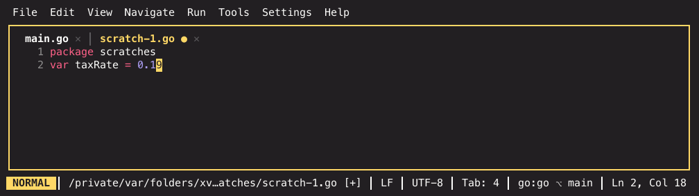

Scratch files and snippets¶
Two unrelated features that solve the same kind of annoyance: getting text out of your head without ceremony.
Scratch files¶
A scratch file is a throwaway buffer that is nevertheless a real file. Use one for a quick query, a chunk of JSON you want highlighted, a snippet of code you are reasoning about — anything you would otherwise paste into an untitled tab and lose.
Cmd+Shift+N creates one and asks for the language first: Plain Text, Python, PHP, SQL — one row per registered language, filtered as you type. Or skip the prompt and run the language's own command from the palette: New Scratch File: Python, New Scratch File: SQL, New Scratch File: Plain Text.

The screenshot uses the monokai-pro theme.
The language decides the file extension, and everything language-aware follows
from that — syntax highlighting, the language server, comment toggling, smart
indentation, and the language's file template (a PHP scratch opens with
<?php). A scratch file is not a special buffer type; it is a normal file that
happens to live somewhere else.
Running one¶
Shift+F10 (Run File) runs a scratch like any other file: from your
project root, with the interpreter that project resolves — its virtualenv,
its [lang.<id>] interpreter setting, its detected toolchain version. So a
Python or PHP scratch can exercise the project it sits next to without being
part of it. Languages that contribute no run command say so instead.
An Http scratch is the exception worth knowing: it is not run with Shift+F10 but with Cmd+Enter, which sends the request under the cursor — a throwaway API call without adding a file to the repository. See The HTTP client.
Where they live¶
Outside your project tree, under the user state directory. That is the important property: a scratch file can never accidentally end up in a commit, and it is still there when you come back next week — including from a different project.
Open Scratch File… lists them, newest first, with fuzzy filtering. Open scratch tabs also come back with your session like any other file.
Managing them¶
Manage Scratch Files… opens the scratch manager: every scratch with its name, language, size and when it last changed. Type to narrow the list by name or language, Enter opens the selected one (a click selects a row, a second click opens it), and three chords manage it in place:
- Ctrl+R (or F2) renames it. The name is prefilled; a name that is already taken, or one that tries to point somewhere else, is refused with the reason instead of being applied.
- Ctrl+L changes the language — pick from the same list the creation prompt shows. The scratch keeps its name and swaps its extension, which is what re-languages it.
- Ctrl+D (or Del) deletes it, after a confirmation. Scratches have no trash, so the confirmation is the only undo.
If the scratch is open in a tab while you rename it or change its language, the tab follows: the same buffer, the new name in the tab title, the new highlighting. Deleting one closes its tab.
The manager is also reachable from the creation prompt — the language picker's last row, Open existing scratch…, for the moment you notice the scratch you wanted already exists.
The explorer shows them too: a Scratches section sits behind a divider at
the bottom of the file tree, sorted by name (switch to newest-first with the
scratch.sort setting). The cursor walks into it with the explorer's normal
keys, Enter opens a scratch exactly like a project file, D deletes and
Shift+R renames with the explorer's dialogs, and A creates a new
scratch through the language picker. Each row shows on the right how long ago
you last opened that scratch (5m, 3h, 7d); a scratch you have not opened
in this installation shows how long ago it was last changed. When the list is
longer than the section, the cursor and the mouse wheel scroll it. Click the
divider to collapse the section, or drag it to resize; both stick across
restarts.
Generating test data¶
Sometimes what you want in a scratch is not your own text but a file to try something on — 2000 rows of CSV for the table view, a deep JSON document to fold and query, a log file to scroll. Generate Test Data… builds one.
The dialog is a single screen. At the top sit five knobs: a template
picker, the format (CSV, TSV, JSON, NDJSON, XML, YAML, TOML, SQL inserts,
or logfmt log lines), rows (1 to 1 000 000), the seed, and the
table name the SQL and XML formats use. The seed is what makes a generated
file reproducible: the same seed and the same spec give you a byte-identical
file every time, so a bug you find in row 1732 is still there tomorrow. Leave
it at 0 for fresh random data on every run.
Below sits the spec editor: one line per field, written
name = expression. Three kinds of expression exist:
- Generator calls from the catalog —
first_name(),int(1..1000),date(2020-01-01..2026-01-01),from_list(red, green, blue). - Template strings — a quoted string whose
{field}placeholders take the values of other fields of the same row:url = "https://{host}/api/v1/users/{id}". - Weighted alternatives —
weighted(60: "active", 20: "inactive", 20: "banned"), over any expressions and any positive weights (they need not sum to 100):weighted(70: email({domain}), 30: "").
{field} references also work as generator arguments — host =
hostname({domain}) keeps every host inside that row's generated domain.
Fields may reference each other in any order; the generator evaluates them by
their dependencies and rejects a reference cycle by naming it. While you type,
autocomplete offers the generator names (with what each one produces and
its parameter grammar) and the {field} references defined above the cursor —
Enter or Tab accepts, Ctrl+Space asks explicitly. Blank lines and
# comments are fine.
A live preview of the first five rows renders below the editor in the picked format and follows every edit. A spec that cannot generate — a mistyped generator, a bad range, a reference cycle — shows the error with its line number where the preview would be, and generating is refused until it parses.
The catalog covers the usual sample-data shapes: id (the row number),
uuid, first_name, last_name, full_name, email, url, hostname,
domain, ipv4, ipv6, mac, phone, street, city, country,
company, job_title, sentence, paragraph, int, float, bool,
date, hex_color, user_agent and from_list.
Five kinds take a parameter:
| Kind | Parameter | Example |
|---|---|---|
email, url, hostname |
a domain — every value stays inside it | example.com |
int |
min..max |
1..99 |
float |
min..max |
0..1.5 |
date |
from..to |
2020-01-01..2024-12-31 |
from_list |
comma-separated entries | red, green, blue |
Templates are named, format-free specs. Built-ins ship for the common shapes — Person, Address, Order, URL / Web, Server log — and picking one loads its spec into the editor (the format stays whatever you chose). Save your own current spec under a name with Ctrl+S or the save template button; your templates persist across restarts and can be deleted again from the dialog. Edits to the spec never write back into a template unless you save it again.
Generate with Ctrl+G or the generate button. The finished file lands in the scratch store like any other scratch, opens in a tab with the right highlighting, and shows up in the explorer's Scratches section. Your last spec is remembered, so the next Generate Test Data… starts where you left off.
Snippets¶
Type a trigger word, press Tab with the cursor right after it, and it expands into a template. The cursor lands on the first placeholder; Tab and Shift+Tab cycle through the rest, Esc ends the session.
A handful ship built in — iferr, main and forr for Go, main and def
for Python, log and fn for TypeScript and JavaScript.
If the word before the cursor is not a trigger, Tab does what it always does and inserts indentation. Nothing is stolen from you.
Templates also appear in the completion popup, marked template …. That works
with no language server running — the local completion engine answers them
independently.
Writing your own¶
[[snippets]]
trigger = "ifn"
language = "go"
body = "if $1 == nil {\\n\\t$0\\n}"
[[snippets]]
trigger = "todo"
body = "TODO($1): $0"
trigger is the word you type. body is the template, with $1, $2 … as
placeholders and $0 as the final cursor position. language restricts it to
one language; leave it out for a template that applies everywhere.
Multi-line bodies re-indent themselves on expansion: literal tabs become your
buffer's indent unit — honouring tab_width, use_spaces and any
.editorconfig — and continuation lines inherit the current line's
indentation. You write the template with tabs and it comes out matching the
file it lands in.
Resolution when several templates share a trigger:
- Your template for this language
- A built-in for this language
- Your language-independent template
- A language-independent built-in
So defining main for Go shadows the built-in main for Go, and leaves it
alone everywhere else.
Config changes apply live — a new snippet works in the next keystroke, with no restart.
[[snippets]] replaces across settings layers
Like every TOML array, a project-level [[snippets]] block hides your
user-level ones rather than adding to them. The built-ins are the
exception: they live in code and are only ever shadowed per
trigger-and-language, never wiped.
Related¶
- The modal editor — where Tab otherwise goes
- Settings reference — every configuration key